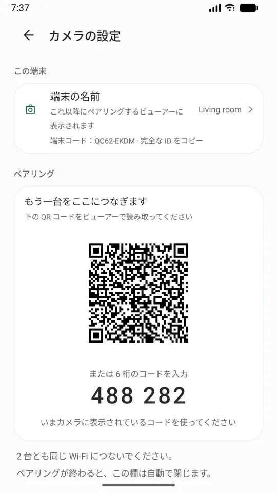
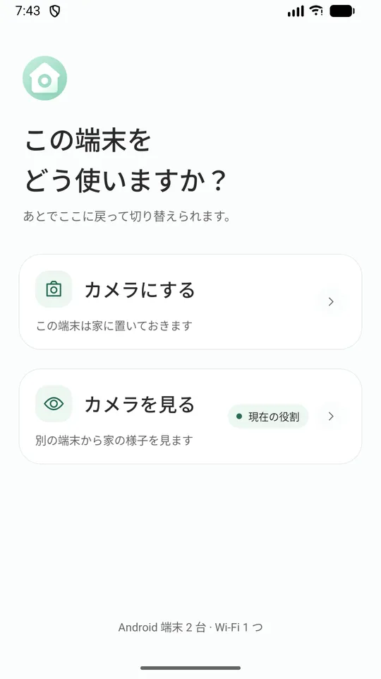
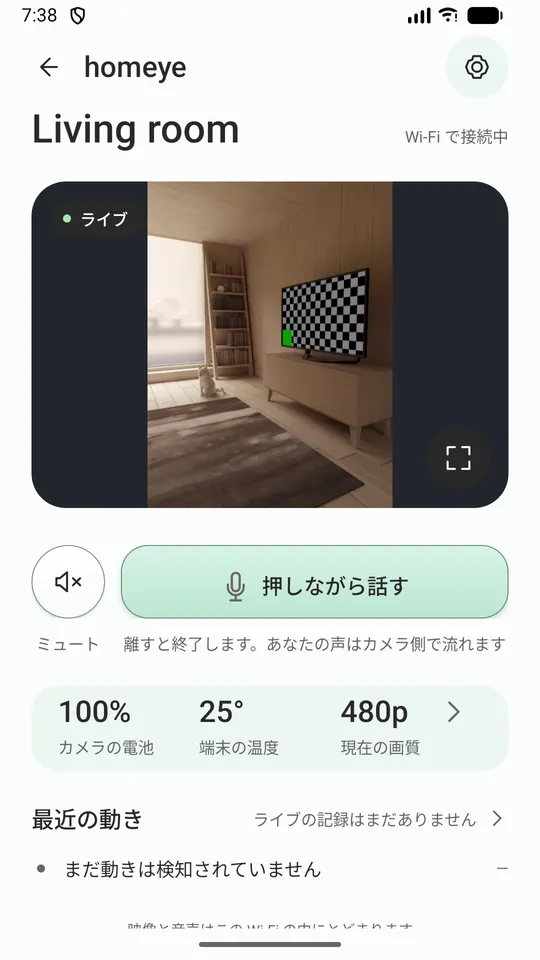
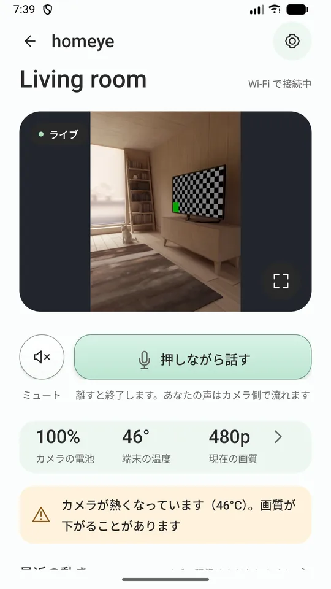
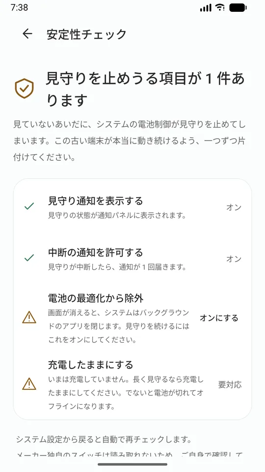
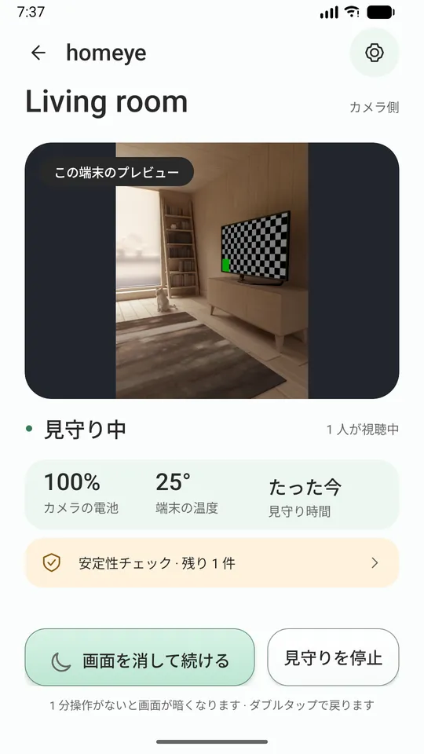

Homeye
com.jerome.homeye · 無料 · Android 7.0+
引き出しの古いAndroidスマホが、家の見守りカメラになります。
スマホ2台と同じWi-Fiだけ。ライブ映像、双方向の通話、動きの通知——アカウント登録なし、間にクラウドなし、広告なし。
Google Play で入手
6.7 MB · 15言語 · アプリ内購入なし
引き出しに眠っている古い Android スマホが、電源につないだ瞬間からカメラになります。機材を買う必要も、アカウントを作る必要もありません。
嘘をつきません
止まったらすぐ分かります
止まったときは、あなたに分かるように知らせます。固まった画面に自分で気づく必要はありません。
画質を下げた理由を伝えます
本体が熱い、電池が少ないといった理由で画質を下げるときは、その理由を伝えます。黙ってぼやけることはありません。
端末の設定を一つずつ案内
「安定性チェック」が、バックグラウンドのアプリをこっそり止めるシステム設定を一覧にして、一つずつ案内します。
ログはあなたが送った先だけへ
何かおかしいときは診断ログを書き出して開発者に送れます。ログが勝手にどこかへ送られることはありません。
使い方
- 2 台のスマホに Homeye を入れて、同じ Wi-Fi につなぎます。
- 古い方で「カメラにする」を選び、電源につないで見たい場所へ向けます。
- ふだん使う方で「カメラを見る」を選び、古い方に表示された QR コードを読み取ります。
ペアリングは一度だけ。あとはアプリを開くだけです。

画面





できること
- ライブ映像と音声。温度と電池残量に合わせて画質が 4 段階で切り替わります
- 押しながら話す通話
- 動き検知。ビューアー側に通知とサムネイルが届きます
- カメラ側のスマホは画面を消したまま動き続けられます
- カメラ側からの電池残量低下・発熱の通知
- ビューアーからのズーム（そのスマホのレンズが許す範囲で）
- 15 言語に対応。システムの設定に従います
このバージョンでできないこと（先にお伝えします）
同じ Wi-Fi の中でしか動きません 外出先でモバイル回線のときは、このバージョンではつながりません。外からの視聴にはサーバーが必要で、検討中ですが今回は含まれていません。
「絶対に落ちない」とは約束できません Android はどのアプリにもバックグラウンドの制限をかけていて、それを約束できる人はいません。約束できるのは、止まったときにあなたに分かるようにすることです。
医療機器ではなく、 大人による見守りの代わりにもなりません。
プライバシー（どの行も自分で確かめられます）
- 映像と音声は、いま接続している Wi-Fi の中だけを通ります。私たちのサーバーは経由しません。
- アカウント不要。メールアドレスも電話番号も集めません。
- 広告なし、分析用 SDK なし。
- メディアサーバーは持たず、クラウド録画も提供しません。
- 端末の識別情報は、スマホのハードウェアキーストア内で生成した鍵ペアです。秘密鍵が端末の外に出ることはありません。
- ビューアーから見つけられるように、カメラ側はWi-Fi内で自分の名前と公開鍵のフィンガープリントだけを知らせます。
必要なもの
同じ Wi-Fi につないだ Android スマホ 2 台（7.0 以降）。カメラ側は電源につないだままにしてください。